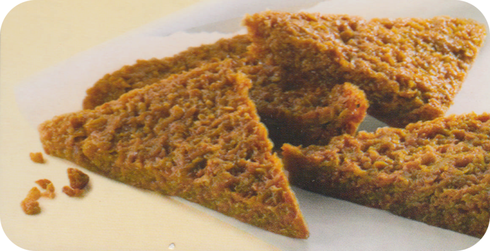

Moist & Chewy Flapjacks

Description
Moist and succulent flapjacks, great to enjoy with a cup of covefe
Ingredients
- 175g butter
- 175g golden syrup
- 175g light muscovado sugar
- 1/2 unwaxed lemon, finely grated zest only (optional)
- pinch ground ginger (optional)
Method
- Preheat the oven to 150C/130C Fan/Gas 2 and line a 20cm/8in square baking tin with baking paper.
- Melt the butter in a medium pan over a low heat. Dip a brush in the butter and brush the baking tin with a little bit of it.
- Add the golden syrup and sugar to the butter and heat gently. Once the sugar is dissolved and the butter is melted, remove the pan from the heat and stir in the porridge oats, lemon zest and ginger.
- Pack the mixture into the baking tin and squash down.
- Bake for 40 minutes.
- Once cooked, remove from the oven, leave to cool for 15 minutes, then turn out onto a chopping board and cut into squares.
- These flapjacks are delicious in a packed lunch or as a grab-and-go breakfast.
Home